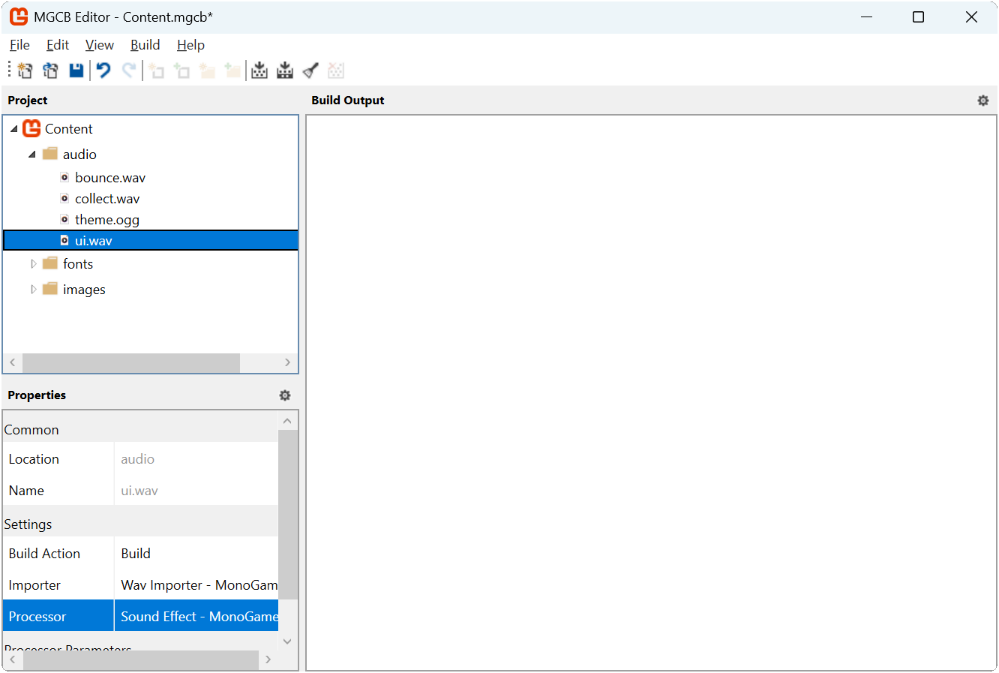
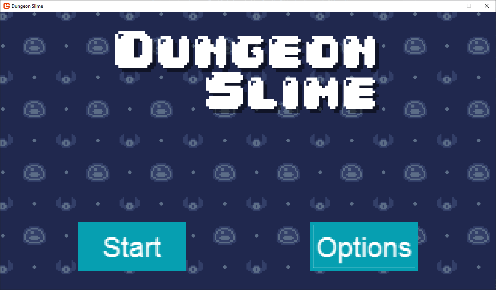
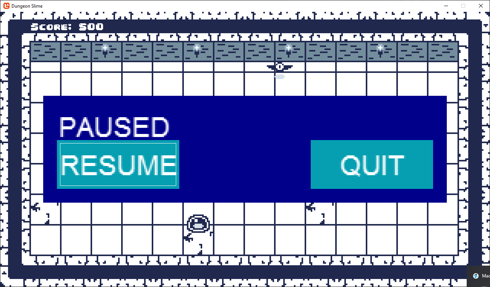

Chapter 20: Implementing UI with Gum
In the previous chapter we explored the fundamental concepts of user interface design. Now we are ready to put these principles into practice by implementing a UI system for our game. While it is possible to build a UI system from scratch, we will take advantage of Gum, a specialized UI framework that simplifies many of the complex aspects of UI implementation.
In this chapter you will:
- Install and configure the Gum NuGet package.
- Learn about Gum's core concepts including Forms and Visuals
- Implement UI elements for our game's title scene.
- Create a pause menu for the gameplay scene.
- Handle input from keyboard, mouse, and gamepads
- Integrate the UI system with our existing game architecture.
What is Gum?
Gum is a powerful UI layout engine and framework. It provides a flexible, efficient system capable of producing virtually any UI layout you might need in your games. While originally developed alongside the FlatRedBall game engine, Gum has evolved to work seamlessly with multiple platforms including MonoGame, which we are using in this tutorial.
Why Use Gum?
Creating a UI system from scratch requires solving many complex problems:
- Layout Management: Calculating positions for elements that need to adapt to different screen sizes or content changes.
- Input Handling: Detecting and responding to mouse, keyboard, and gamepad inputs across multiple UI elements.
- Visual State Management: Changing appearances based on user interactions (hovering, focusing, clicking).
- Component Hierarchy: Managing parent-child relationships between elements.
Gum addresses these challenges with ready-made solutions, allowing us to focus on the specific needs of our game rather than reinventing the UI wheel. While MonoGame provides the basic tools for drawing graphics and detecting input, it does not include high-level UI abstractions; this is where tools like Gum fill the gap.
Important
This tutorial uses the Gum NuGet package to help with layout and responding to user interactions. This tutorial does not require the use of the Gum tool - we will be doing everything in code.
Keep in mind that while it is possible to build a full UI system without any external dependencies, creating a layout engine is complicated and beyond the scope of this tutorial. Instead, we will be taking advantage of the Gum NuGet package.
Gum is a powerful system enabling the creation of virtually any game UI. We will be covering some of the basics in this tutorial. The full Gum documentation can be found here: https://docs.flatredball.com/gum/code/monogame
Gum Concepts
Before we dive into implementation, we will explore the core concepts that Gum provides. Gum simplifies UI development by providing ready-made controls and layout systems that would otherwise require significant effort to build from scratch.
Understanding Gum's Structure
Gum organizes UI elements in a hierarchical tree structure, similar to how HTML organizes web elements or how GUI frameworks like WPF or JavaFX structure their interfaces. This hierarchy consists of:
- The Root Element: The topmost container in the hierarchy that serves as the entry point for all UI elements.
- Containers: Elements that can hold other elements (like panels or screens).
- Controls: Interactive elements that respond to user input (like buttons or sliders).
- Visuals: The actual graphical representations of UI elements (like text, images, or shapes).
When a game using Gum runs, this hierarchy is maintained in memory, with each element knowing its parent and children. The framework automatically handles the flow of events through this hierarchy and manages the drawing of elements according to their positions in the tree.
Gum Root Element
All Gum elements must be directly or indirectly added to Gum's root container. This can be done directly wth the AddToRoot() method:
// Creating a panel and adding it to the root
Panel mainMenuPanel = new Panel();
mainMenuPanel.AddToRoot();
Or it can be done indirectly by adding a control as a child of an element that has been added to Gum's root container:
// Creating a panel and adding it to the root
Panel mainMenuPanel = new Panel();
mainMenuPanel.AddToRoot();
// Creating a button and adding it as a child element of the panel
// which indirectly connects it to Gum's root container
Button startButton = new Button();
mainMenuPanel.AddChild(startButton);
Gum's root element can be cleared at any time to remove all UI elements:
// Clear all children from Gum's root container.
GumService.Default.Root.Children.Clear();
This can be useful when navigating between different scenes to ensure UI elements do not persist from previous scenes:
public class GameScene
{
public override void Initialize()
{
// Clear all children from Gum's root container that may have been added
// during the previous scene
GumService.Default.Root.Children.Clear();
// Now that it has been cleared, initialize the UI for this scene
InitializeUI();
}
}
Anchoring
In the previous chapter we discussed anchoring, a fundamental UI concept that allows you to position elements relative to specific reference points of their parents. Gum supports anchoring of Forms controls through their Anchor() method.
// Creating a panel and adding it to the root
Panel mainMenuPanel = new Panel();
mainMenuPanel.AddToRoot();
// Creating a button and adding it as a child of the panel
// anchored ot the bottom-left of the panel
Button startButton = new Button();
startButton.Anchor(Gum.Wireframe.Anchor.BottomLeft);
mainMenuPanel.AddChild(startButton);
Gum supports the following anchors:
| Anchor | Gum Value |
|---|---|
| TopLeft | Gum.Wireframe.Anchor.TopLeft |
| Top | Gum.Wireframe.Anchor.Top |
| TopRight | Gum.Wireframe.Anchor.TopRight |
| Left | Gum.Wireframe.Anchor.Left |
| Center | Gum.Wireframe.Anchor.Center |
| Right | Gum.Wireframe.Anchor.Right |
| BottomLeft | Gum.Wireframe.Anchor.BottomLeft |
| Bottom | Gum.Wireframe.Anchor.Bottom |
| BottomRight | Gum.Wireframe.Anchor.BottomRight |
Docking
In the previous chapter, we also discussed docking, a fundamental UI concept that adjusts an element's size to fill the available space. Gum supports docking of Forms controls through their Dock() method.
// Creating a panel and adding it to the root
Panel mainMenuPanel = new Panel();
mainMenuPanel.AddToRoot();
// Docking the panel to fill the entire root space
mainMenuPanel.Dock(Gum.Wireframe.Dock.Fill);
Gum supports the following docs:
| Anchor | Gum Value | Description |
|---|---|---|
| Top | Gum.Wireframe.Dock.Top |
Anchors to the top edge and fills horizontally. |
| Left | Gum.Wireframe.Dock.Left |
Anchors to the left edge and fills vertically. |
| Right | Gum.Wireframe.Dock.Right |
Anchors to the ridge edge and fills vertically. |
| Bottom | Gum.Wireframe.Dock.Bottom |
Anchors to the bottom edge and fills horizontally. |
| Fill | Gum.Wireframe.Dock.Fill |
Anchors to the center and fills the entire parent area vertically and horizontally. |
| FillHorizontally | Gum.Wireframe.Dock.FillHorizontally |
Stretches across the parent's width, filling horizontally. |
| FillVertically | Gum.Wireframe.Dock.FillVertically |
Stretches across the parent's height, filling vertically. |
| SizeToChildren | Gum.Wireframe.Dock.SizeToChildren |
Automatically sizes vertically and horizontally based on contained child element. |
Forms and Visuals
Gum provides two types of objects: Forms and Visuals. Forms controls are typical interactive UI elements such as buttons, sliders, and text boxes that handle user interaction through mouse, gamepad, and keyboard inputs. These controls come with built-in functionality; a button responds visually when focused, while a slider changes its value when clicked on its track. By using these standardized components, you can maintain consistency throughout your UI implementation.
All Forms controls provide customization through their Visual property, which serves as a gateway to modifying their appearance and layout. With this property, you can move, resize, restyle, and even completely replace visuals through code. As we will see when building our UI in the next chapter, this separation between functionality and presentation allows us to create consistent behaviors while adapting the visual style to match our game's aesthetic.
For now, we will examine some of the Forms control types we will use in this chapter.
Panel
Panels serve as invisible containers that group related UI elements together. Unlike visible elements that display graphics, panels focus on organization and layout management. A panel provides several key functions:
- Groups related elements for easier management.
- Controls visibility for entire sections of UI at once.
- Establishes a coordinate system for child elements.
- Provides a foundation for layout management.
Panels are especially useful for creating distinct UI screens. By toggling the visibility of different panels, you can implement complete UI state changes with minimal code:
// Change the state of the UI by hiding one panel and showing another.
mainMenuPanel.IsVisible = false;
optionsPanel.IsVisible = true;
A common pattern is to set a panel's docking to Fill, which makes it span the entire available area:
// Make the panel fill the entire screen
mainMenuPanel.Dock(Gum.Wireframe.Dock.Fill);
This creates a consistent coordinate space for all child elements, allowing them to be positioned relative to the screen.
Button
The Button Forms control type is the primary interactive control for triggering actions in your UI. A button:
- Responds to clicks from mouse, touch, keyboard, or gamepad input.
- Provides visual feedback when focused or hovered.
- Raises a
Clickevent when activated.
Buttons can be positioned using anchoring to create layouts that adapt to different screen sizes:
// Creating a button that is anchored to the bottom left.
Button startButton = new Button;
startButton.Anchor(Gum.Wireframe.Anchor.BottomLeft);
// Set the X and Y position so it is 20px from the left edge
// and 20px from the bottom edge.
startButton.Visual.X = 20;
startButton.Visual.Y = -20;
The Click event is raised whenever the button is activated and provides a standard way to respond regardless of input device:
startButton.Click += (sender, args) =>
{
// Handle button click...
StartGame();
};
Note
The Click event for a button is triggered automatically when it is left-clicked by a mouse or pushed via touch controls. For keyboard and gamepad input, it can only be triggered when the button has focus, which typically happens when the player navigates to it using the tab key or controller.
Slider
The Slider Forms control type allows users to select a numeric value from a continuous range. A slider:
- Displays and modifies a
Valueproperty constrained between aMinimumandMaximumvalue. - Responds to mouse clicks on its track or by dragging its thumb.
- Supports keyboard and gamepad input for incremental adjustments.
- Raises events when its value changes.
Basic slider setup includes defining its range and establishing event handlers:
Slider volumeSlider = new Slider();
volumeSlider.Minimum = 0.0f;
volumeSlider.Maximum = 1.0f;
volumeSlider.Value = 0.5f;
volumeSlider.SmallChange = 0.1f;
volumeSlider.LargeChange = 0.2f;
The SmallChange property sets the increment for keyboard and gamepad adjustments, while the LargeChange property determines the increment when clicking directly on the slider track.
Sliders provide several events for different interaction scenarios:
ValueChanged: Fires continuously as the value changes (useful for live previews).ValueChangeCompleted: Fires once when the user finishes adjusting the value (useful for applying final settings).
volumeSlider.ValueChanged += (sender, arg) =>
{
// Handle value changed event...
UpdateVolume(volumeSlider.Value);
};
volumeSlider.ValueChangedCompleted += (sender, arg) =>
{
// Handle value change completed event...
UpdateVolume(volumeSlider.Value);
// Useful to do things like this here since this fires once
// the slider value change has completed so it is not constantly
// triggering ui sound effects.
PlayUISoundEffect();
};
Property Changes vs States
Gum allows you to customize visuals in two ways: through direct property assignment and through states. For simple property changes, you can directly assign values in code. For example, the following code example changes the width of a button
startButton.Visual.Width = 100;
Direct property assignment works well for initial setup, such as positioning elements or setting their dimensions when first creating your UI. However, when you need visual elements to respond to user interactions (like highlighting a button when it is focused), a different approach is required.
For these dynamic changes, Gum uses a system of states (implemented as StateSave objects). Each Forms control maintains a collection of named states that are automatically applied in response to specific user interactions. When a button becomes focused, for instance, Gum looks for an applies a state named "Focused" to alter its appearance.
Note
In the next chapter during the customization pass, we will create states to visually indicate when controls are focused, providing clear feedback to the player.
Updating Our Game To Use Gum
Now that we understand the UI concepts and how Gum will help implement them, we can integrate Gum into our game project. We will add the framework, initialize it, and prepare it for use in our scenes. For now we will use the default styling in Gum to quickly iterate and build the UI and do a customization styling pass in the next chapter.
Adding the Gum NuGet Package
Before we can use Gum in our project, we first need to add it using NuGet. NuGet is a package manager for .NET projects that allows you to add third-party libraries into your project, similar to how we created and added our own class library.
To add the Gum NuGet package to our game project, follow the instructions below based on your development environment:
To add the Gum NuGet package in Visual Studio Code:
- In the Solution Explorer panel, right-click the DungeonSlime project.
- Choose Add NuGet Package from the context menu.
- Enter "Gum.MonoGame" in the Add NuGet Package search prompt and press Enter.
- When the search finishes, select the Gum.MonoGame package in the results
- When prompted for a version, choose the latest version ("2025.4.23.1" as of this writing").
Tip
You can verify the package was successfully added by examining your DungeonSlime.csproj file, which should now contain a reference like:
<PackageReference Include="Gum.MonoGame" Version="2025.4.23.1" />
Adding UI Sound Effect
To make our UI more responsive and engaging, we will add audio feedback that plays when players interact with buttons and other UI elements. Sound effects provide immediate confirmation that an input has been recognized, creating a more engaging experience.
First, download the UI sound effect by right-clicking the following link and saving it as ui.wav in the game project's Content/audio folder:
Next, add this sound effect to your content project using the MGCB Editor:
- Open the Content.mgcb content project file in the MGCB Editor.
- Right-click the audio folder and choose Add > Existing Item....
- Navigate to and select the ui.wav file you just downloaded.
- In the Properties panel, verify that the Processor is set to
Sound Effect. - Save the changes and close the MGCB Editor.
|  |
|---|
| Figure 20-2: The MGCB Editor with ui.wav added to the audio folder |
We will load and use this sound effect in our UI implementation to provide auditory feedback when players interact with buttons and sliders.
Initializing Gum
With the Gum NuGet package added to our project, we need to initialize Gum in our game. This will enable the UI system and configure input handling for our controls. Since this is an initialization that only needs to happen once, we can make the necessary changes to the Game1 class.
First, open the Game1.cs file and add the following new using statements to the top:
using DungeonSlime.Scenes;
using Microsoft.Xna.Framework.Media;
using MonoGameLibrary;
using MonoGameGum;
using MonoGameGum.Forms.Controls;
Next, add the following method to the Game1 class to encapsulate the initializations of the Gum UI service:
private void InitializeGum()
{
// Initialize the Gum service
GumService.Default.Initialize(this);
// Tell the Gum service which content manager to use. We'll tell it to
// use the global content manager from our Core.
GumService.Default.ContentLoader.XnaContentManager = Core.Content;
// Register keyboard input for UI control.
FrameworkElement.KeyboardsForUiControl.Add(GumService.Default.Keyboard);
// Register gamepad input for Ui control.
FrameworkElement.GamePadsForUiControl.AddRange(GumService.Default.Gamepads);
// Customize the tab reverse UI navigation to also trigger when the keyboard
// Up arrow key is pushed.
FrameworkElement.TabReverseKeyCombos.Add(
new KeyCombo() { PushedKey = Microsoft.Xna.Framework.Input.Keys.Up });
// Customize the tab UI navigation to also trigger when the keyboard
// Down arrow key is pushed.
FrameworkElement.TabKeyCombos.Add(
new KeyCombo() { PushedKey = Microsoft.Xna.Framework.Input.Keys.Down });
// The assets created for the UI were done so at 1/4th the size to keep the size of the
// texture atlas small. So we'll set the default canvas size to be 1/4th the size of
// the game's resolution then tell gum to zoom in by a factor of 4.
GumService.Default.CanvasWidth = GraphicsDevice.PresentationParameters.BackBufferWidth / 4.0f;
GumService.Default.CanvasHeight = GraphicsDevice.PresentationParameters.BackBufferHeight / 4.0f;
GumService.Default.Renderer.Camera.Zoom = 4.0f;
}
Finally, update the Initialize method to call the InitializeGum method we just created:
protected override void Initialize()
{
base.Initialize();
// Start playing the background music
Audio.PlaySong(_themeSong);
// Initialize the Gum UI service
InitializeGum();
// Start the game with the title scene.
ChangeScene(new TitleScene());
}
The following is a breakdown of this initialization process:
Basic Initialization:
GumService.Default.Initialize(this)sets up the Gum system with our game instance. This is required for any gum project.Note
We only need to pass our Game instance since we are using Gum as a code-first approach. Gum also offers a visual editor that creates Gum project files. When using the editor, you will need to also pass the Gum Project file here.
Content Loading: Gum needs to be made aware of which content manager to use to load assets through the content pipeline. By setting
GumService.Default.ContentLoader.XnaContentManager = Core.Content, we tell Gum to use our game's content manager when loading assets. By using the game's existing content manager, Gum also gets the benefit of the caching that the content manager performs when loading assets.Input Configuration:
- By default, all Forms controls automatically respond to mouse and touch screen input devices. We need to explicitly register keyboard and gamepad input devices by using th
FrameworkElement.KeyboardsForUiControlandFramework.GamePadsForUiControlproperties. - By default, Forms controls will automatically respond to tab and shift-tab for navigation. By using the
FrameworkElement.TabKeyCombosandFrameworkElement.TabReverseKeyCombosproperties, we can add additional key combinations for tabbing. Here map the Up arrow for reverse tabbing and the Down arrow for forward tabbing.
Tip
If you prefer different navigation keys, you can remove the built-in Tab/Shift+Tab navigation.
Simply call these methods before adding your custom combinations:
FrameworkElement.TabKeyCombos.Clear(); FrameworkElement.TabReverseKeyCombos.Clear();- By default, all Forms controls automatically respond to mouse and touch screen input devices. We need to explicitly register keyboard and gamepad input devices by using th
UI Scaling: Gum allows us to independently scale the UI regardless of the resolution of the game. Our game is set to a resolution of 1280x720, however as we will see during the styling section later, the UI assets created were done at one-fourth the size to reduce the size of the texture atlas. Here, we use the
GumService.Default.CanvasWidthandGumService.Default.CanvasHeightproperties to set the canvas size to one-fourth that of our game's resolution. Then using by setting theGumService.Default.Renderer.Camera.Zoomproperty to four, we effectively make it render the UI at full resolution.
Gum is now fully initialized and we can use it in our scenes to add UI to our game.
Adding TitleScene UI
With Gum added and initialized in our game, we can now implement UI elements for our title scene. We will create panels for both the main menu and options menu, implement the necessary event handlers, and integrate everything with our existing title scene.
First, open the TitleScene.cs file in the game project and add the following using declarations to the top of the TitleScene class:
using System;
using Microsoft.Xna.Framework;
using Microsoft.Xna.Framework.Audio;
using Microsoft.Xna.Framework.Graphics;
using Microsoft.Xna.Framework.Input;
using MonoGameGum;
using MonoGameGum.Forms.Controls;
using MonoGameGum.GueDeriving;
using MonoGameLibrary;
using MonoGameLibrary.Scenes;
Next, add the following fields:
private SoundEffect _uiSoundEffect;
private Panel _titleScreenButtonsPanel;
private Panel _optionsPanel;
private Button _optionsButton;
private Button _optionsBackButton;
Creating the Title Panel
First, wew ill create a method that builds our main menu panel with start and options buttons. Add the following method to the TitleScene class:
private void CreateTitlePanel()
{
// Create a container to hold all of our buttons
_titleScreenButtonsPanel = new Panel();
_titleScreenButtonsPanel.Dock(Gum.Wireframe.Dock.Fill);
_titleScreenButtonsPanel.AddToRoot();
var startButton = new Button();
startButton.Anchor(Gum.Wireframe.Anchor.BottomLeft);
startButton.Visual.X = 50;
startButton.Visual.Y = -12;
startButton.Visual.Width = 70;
startButton.Text = "Start";
startButton.Click += HandleStartClicked;
_titleScreenButtonsPanel.AddChild(startButton);
_optionsButton = new Button();
_optionsButton.Anchor(Gum.Wireframe.Anchor.BottomRight);
_optionsButton.Visual.X = -50;
_optionsButton.Visual.Y = -12;
_optionsButton.Visual.Width = 70;
_optionsButton.Text = "Options";
_optionsButton.Click += HandleOptionsClicked;
_titleScreenButtonsPanel.AddChild(_optionsButton);
startButton.IsFocused = true;
}
Our title panel includes two buttons positioned at the bottom corners of the screen. The "Start" button will allow players to begin the game while the "Options" button will hide the main menu and display the options menu.
Note
Notice how we use Anchor to position the buttons relative to the panel's edges, with the "Start" button anchored at the bottom left and the "Options" button anchored at the bottom right. Then the positioning of the elements is adjusted relative to its anchor point.
Each button registers a Click event handler to respond when the players selects it. We should implement the event handler method for these buttons next. Add the following methods to the TitleScene class:
private void HandleStartClicked(object sender, EventArgs e)
{
// A UI interaction occurred, play the sound effect
Core.Audio.PlaySoundEffect(_uiSoundEffect);
// Change to the game scene to start the game.
Core.ChangeScene(new GameScene());
}
private void HandleOptionsClicked(object sender, EventArgs e)
{
// A UI interaction occurred, play the sound effect
Core.Audio.PlaySoundEffect(_uiSoundEffect);
// Set the title panel to be invisible.
_titleScreenButtonsPanel.IsVisible = false;
// Set the options panel to be visible.
_optionsPanel.IsVisible = true;
// Give the back button on the options panel focus.
_optionsBackButton.IsFocused = true;
}
These handlers are called when the Click event is raised for each button. The handler for the "Start" button changes to the game scene, while the handler for the options button toggles the visibility between the main menu and the options panel.
Creating the Options Panel
Next, we will create the options panel with sliders to adjust the volume for music and sound effects. Add the following method to the TitleScene class:
private void CreateOptionsPanel()
{
_optionsPanel = new Panel();
_optionsPanel.Dock(Gum.Wireframe.Dock.Fill);
_optionsPanel.IsVisible = false;
_optionsPanel.AddToRoot();
var optionsText = new TextRuntime();
optionsText.X = 10;
optionsText.Y = 10;
optionsText.Text = "OPTIONS";
_optionsPanel.AddChild(optionsText);
var musicSlider = new Slider();
musicSlider.Anchor(Gum.Wireframe.Anchor.Top);
musicSlider.Visual.Y = 30f;
musicSlider.Minimum = 0;
musicSlider.Maximum = 1;
musicSlider.Value = Core.Audio.SongVolume;
musicSlider.SmallChange = .1;
musicSlider.LargeChange = .2;
musicSlider.ValueChanged += HandleMusicSliderValueChanged;
musicSlider.ValueChangeCompleted += HandleMusicSliderValueChangeCompleted;
_optionsPanel.AddChild(musicSlider);
var sfxSlider = new Slider();
sfxSlider.Anchor(Gum.Wireframe.Anchor.Top);
sfxSlider.Visual.Y = 93;
sfxSlider.Minimum = 0;
sfxSlider.Maximum = 1;
sfxSlider.Value = Core.Audio.SoundEffectVolume;
sfxSlider.SmallChange = .1;
sfxSlider.LargeChange = .2;
sfxSlider.ValueChanged += HandleSfxSliderChanged;
sfxSlider.ValueChangeCompleted += HandleSfxSliderChangeCompleted;
_optionsPanel.AddChild(sfxSlider);
_optionsBackButton = new Button();
_optionsBackButton.Text = "BACK";
_optionsBackButton.Anchor(Gum.Wireframe.Anchor.BottomRight);
_optionsBackButton.X = -28f;
_optionsBackButton.Y = -10f;
_optionsBackButton.Click += HandleOptionsButtonBack;
_optionsPanel.AddChild(_optionsBackButton);
}
This panel includes a text label, two sliders for adjusting audio volumes, and a back button for returning to the main menu. The panel is initially invisible since we start on the main menu. Both the "Music Volume" slider and the "Sound Effects Volume" slider register events to be called when the value of the sliders change and when the value change has been completed. The "Back" button registers a click event similar to the ones from the main menu.
Now we should implement the event handlers for these controls:
private void HandleSfxSliderChanged(object sender, EventArgs args)
{
// Intentionally not playing the UI sound effect here so that it's not
// constantly triggered as the user adjusts the slider's thumb on the
// track.
// Get a reference to the sender as a Slider.
var slider = (Slider)sender;
// Set the global sound effect volume to the value of the slider.;
Core.Audio.SoundEffectVolume = (float)slider.Value;
}
private void HandleSfxSliderChangeCompleted(object sender, EventArgs e)
{
// Play the UI Sound effect so the player can hear the difference in audio.
Core.Audio.PlaySoundEffect(_uiSoundEffect);
}
private void HandleMusicSliderValueChanged(object sender, EventArgs args)
{
// Intentionally not playing the UI sound effect here so that it's not
// constantly triggered as the user adjusts the slider's thumb on the
// track.
// Get a reference to the sender as a Slider.
var slider = (Slider)sender;
// Set the global song volume to the value of the slider.
Core.Audio.SongVolume = (float)slider.Value;
}
private void HandleMusicSliderValueChangeCompleted(object sender, EventArgs args)
{
// A UI interaction occurred, play the sound effect
Core.Audio.PlaySoundEffect(_uiSoundEffect);
}
private void HandleOptionsButtonBack(object sender, EventArgs e)
{
// A UI interaction occurred, play the sound effect
Core.Audio.PlaySoundEffect(_uiSoundEffect);
// Set the title panel to be visible.
_titleScreenButtonsPanel.IsVisible = true;
// Set the options panel to be invisible.
_optionsPanel.IsVisible = false;
// Give the options button on the title panel focus since we are coming
// back from the options screen.
_optionsButton.IsFocused = true;
}
These handlers update our audio settings in real-time as the player adjusts the sliders.
Tip
Notice that for both sliders, we registered a method for the ValueChangeCompleted event. This is so we can play the UI sound effect only when the player has finished adjusting the slider value. If we had instead played the UI sound effect in the ValueChanged event, then the UI sound effect would trigger constantly while the slider is being adjusted if using a mouse to drag it.
Initializing the UI
Now that we have implemented the methods that will create both the main menu panel and the options menu panel, we need to implement the main UI initializations method that will call them. Add the following method to the TitleScene class:
private void InitializeUI()
{
// Clear out any previous UI in case we came here from
// a different screen:
GumService.Default.Root.Children.Clear();
CreateTitlePanel();
CreateOptionsPanel();
}
This method first clears any existing UI elements from Gum's root container to prevent duplication, then calls our panel creation methods to build the complete interface.
Integrating with the Game Loop
Finally, we need to integrate our UI initialization, update, and draw with the scene's lifecycle. First, add the call to InitializeUI() in the Initialize method:
public override void Initialize()
{
// LoadContent is called during base.Initialize().
base.Initialize();
// While on the title screen, we can enable exit on escape so the player
// can close the game by pressing the escape key.
Core.ExitOnEscape = true;
// Set the position and origin for the Dungeon text.
Vector2 size = _font5x.MeasureString(DUNGEON_TEXT);
_dungeonTextPos = new Vector2(640, 100);
_dungeonTextOrigin = size * 0.5f;
// Set the position and origin for the Slime text.
size = _font5x.MeasureString(SLIME_TEXT);
_slimeTextPos = new Vector2(757, 207);
_slimeTextOrigin = size * 0.5f;
// Initialize the offset of the background pattern at zero
_backgroundOffset = Vector2.Zero;
// Set the background pattern destination rectangle to fill the entire
// screen background
_backgroundDestination = Core.GraphicsDevice.PresentationParameters.Bounds;
InitializeUI();
}
Next, update the LoadContent method to load the sound effect that will be used as auditory feedback for the UI:
public override void LoadContent()
{
// Load the font for the standard text.
_font = Core.Content.Load<SpriteFont>("fonts/04B_30");
// Load the font for the title text
_font5x = Content.Load<SpriteFont>("fonts/04B_30_5x");
// Load the background pattern texture.
_backgroundPattern = Content.Load<Texture2D>("images/background-pattern");
// Load the sound effect to play when ui actions occur.
_uiSoundEffect = Core.Content.Load<SoundEffect>("audio/ui");
}
Next update the Update method to include Gum's update logic:
public override void Update(GameTime gameTime)
{
// Update the offsets for the background pattern wrapping so that it
// scrolls down and to the right.
float offset = _scrollSpeed * (float)gameTime.ElapsedGameTime.TotalSeconds;
_backgroundOffset.X -= offset;
_backgroundOffset.Y -= offset;
// Ensure that the offsets do not go beyond the texture bounds so it is
// a seamless wrap
_backgroundOffset.X %= _backgroundPattern.Width;
_backgroundOffset.Y %= _backgroundPattern.Height;
GumService.Default.Update(gameTime);
}
Finally, the Draw method needs to be updated to:
- Only show the text for the game title when the title panel is visible
- Add Gum's drawing call to draw the user interface
Update the Draw method to the following:
public override void Draw(GameTime gameTime)
{
Core.GraphicsDevice.Clear(new Color(32, 40, 78, 255));
// Draw the background pattern first using the PointWrap sampler state.
Core.SpriteBatch.Begin(samplerState: SamplerState.PointWrap);
Core.SpriteBatch.Draw(_backgroundPattern, _backgroundDestination, new Rectangle(_backgroundOffset.ToPoint(), _backgroundDestination.Size), Color.White * 0.5f);
Core.SpriteBatch.End();
if (_titleScreenButtonsPanel.IsVisible)
{
// Begin the sprite batch to prepare for rendering.
Core.SpriteBatch.Begin(samplerState: SamplerState.PointClamp);
// The color to use for the drop shadow text.
Color dropShadowColor = Color.Black * 0.5f;
// Draw the Dungeon text slightly offset from it's original position and
// with a transparent color to give it a drop shadow
Core.SpriteBatch.DrawString(_font5x, DUNGEON_TEXT, _dungeonTextPos + new Vector2(10, 10), dropShadowColor, 0.0f, _dungeonTextOrigin, 1.0f, SpriteEffects.None, 1.0f);
// Draw the Dungeon text on top of that at its original position
Core.SpriteBatch.DrawString(_font5x, DUNGEON_TEXT, _dungeonTextPos, Color.White, 0.0f, _dungeonTextOrigin, 1.0f, SpriteEffects.None, 1.0f);
// Draw the Slime text slightly offset from it's original position and
// with a transparent color to give it a drop shadow
Core.SpriteBatch.DrawString(_font5x, SLIME_TEXT, _slimeTextPos + new Vector2(10, 10), dropShadowColor, 0.0f, _slimeTextOrigin, 1.0f, SpriteEffects.None, 1.0f);
// Draw the Slime text on top of that at its original position
Core.SpriteBatch.DrawString(_font5x, SLIME_TEXT, _slimeTextPos, Color.White, 0.0f, _slimeTextOrigin, 1.0f, SpriteEffects.None, 1.0f);
// Always end the sprite batch when finished.
Core.SpriteBatch.End();
}
GumService.Default.Draw();
}
With these changes, our UI system is now fully integrated into the scene's game loop. Gum updates its controls in the Update method and draws them in the Draw method. This produces a fully functional title screen with buttons that allows players to start the game or adjust audio settings.
|  |
|---|
| Figure 20-1: Title screen with default Gum buttons |
Note
You may notice that the UI elements currently use Gum's default styling, which does not match our game's visual theme. We will explore customizing these controls to match our game's visual style in the next chapter.
Adding GameScene UI
Now that we have setup the UI for the title scene, we will add a pause menu to our game scene. This UI will start invisible but will be shown when the player presses the escape key. For consistency, we will implement the UI for the game scene in the same order that we implemented the UI for the title scene.
First, open the GameScene.cs file in the game project and add the following using declarations to the top of the GameScene class.
using System;
using Gum.Wireframe;
using Microsoft.Xna.Framework;
using Microsoft.Xna.Framework.Audio;
using Microsoft.Xna.Framework.Graphics;
using Microsoft.Xna.Framework.Input;
using MonoGameGum;
using MonoGameGum.Forms.Controls;
using MonoGameGum.GueDeriving;
using MonoGameLibrary;
using MonoGameLibrary.Graphics;
using MonoGameLibrary.Input;
using MonoGameLibrary.Scenes;
Next, add the following fields:
// A reference to the pause panel UI element so we can set its visibility
// when the game is paused.
private Panel _pausePanel;
// A reference to the resume button UI element so we can focus it
// when the game is paused.
private Button _resumeButton;
// The UI sound effect to play when a UI event is triggered.
private SoundEffect _uiSoundEffect;
Pausing the Game
To pause the game, first we will create a method that makes the pause panel visible. Add the following method to the GameScene class:
private void PauseGame()
{
// Make the pause panel UI element visible.
_pausePanel.IsVisible = true;
// Set the resume button to have focus
_resumeButton.IsFocused = true;
}
Next, update the CheckKeyboardInput method so that when the escape key is pressed, we pause the game instead of returning to the title scene:
private void CheckKeyboardInput()
{
// Get a reference to the keyboard info
KeyboardInfo keyboard = Core.Input.Keyboard;
// If the escape key is pressed, pause the game.
if (Core.Input.Keyboard.WasKeyJustPressed(Keys.Escape))
{
PauseGame();
}
// Existing keyboard input code
// ...
Finally, update the CheckGamePadInput method so the game is paused when the start button is pressed:
private void CheckGamePadInput()
{
// Get the gamepad info for gamepad one.
GamePadInfo gamePadOne = Core.Input.GamePads[(int)PlayerIndex.One];
// If the start button is pressed, pause the game
if (gamePadOne.WasButtonJustPressed(Buttons.Start))
{
PauseGame();
}
// Existing gamepad input code
// ...
Creating the Pause Panel
Next, we will create a method that builds our pause panel with resume and quit buttons. Add the following method to the GameScene class:
private void CreatePausePanel()
{
_pausePanel = new Panel();
_pausePanel.Anchor(Anchor.Center);
_pausePanel.Visual.WidthUnits = DimensionUnitType.Absolute;
_pausePanel.Visual.HeightUnits = DimensionUnitType.Absolute;
_pausePanel.Visual.Height = 70;
_pausePanel.Visual.Width = 264;
_pausePanel.IsVisible = false;
_pausePanel.AddToRoot();
var background = new ColoredRectangleRuntime();
background.Dock(Dock.Fill);
background.Color = Color.DarkBlue;
_pausePanel.AddChild(background);
var textInstance = new TextRuntime();
textInstance.Text = "PAUSED";
textInstance.X = 10f;
textInstance.Y = 10f;
_pausePanel.AddChild(textInstance);
_resumeButton = new Button();
_resumeButton.Text = "RESUME";
_resumeButton.Anchor(Anchor.BottomLeft);
_resumeButton.Visual.X = 9f;
_resumeButton.Visual.Y = -9f;
_resumeButton.Visual.Width = 80;
_resumeButton.Click += HandleResumeClicked;
_pausePanel.AddChild(_resumeButton);
var quitButton = new Button();
quitButton.Text = "QUIT";
quitButton.Anchor(Anchor.BottomRight);
quitButton.Visual.X = -9f;
quitButton.Visual.Y = -9f;
quitButton.Width = 80;
quitButton.Click += HandleQuitClicked;
_pausePanel.AddChild(quitButton);
}
Initializing the UI
Now that we have implemented the method to create the pause panel, we can implement the main UI initializations method that will call them. Add the following method to the GameScene class:
private void InitializeUI()
{
GumService.Default.Root.Children.Clear();
CreatePausePanel();
}
Just like with the TitleScene, we first clear any existing UI elements from Gum's root before creating the UI elements for this scene.
Integrating with the Game Loop
Finally, we need to integrate our UI initialization, update, and draw with the scene's lifecycle. First add the call to InitializeUI() in the Initialize method:
public override void Initialize()
{
// LoadContent is called during base.Initialize().
base.Initialize();
// During the game scene, we want to disable exit on escape. Instead,
// the escape key will be used to return back to the title screen
Core.ExitOnEscape = false;
Rectangle screenBounds = Core.GraphicsDevice.PresentationParameters.Bounds;
_roomBounds = new Rectangle(
(int)_tilemap.TileWidth,
(int)_tilemap.TileHeight,
screenBounds.Width - (int)_tilemap.TileWidth * 2,
screenBounds.Height - (int)_tilemap.TileHeight * 2
);
// Initial slime position will be the center tile of the tile map.
int centerRow = _tilemap.Rows / 2;
int centerColumn = _tilemap.Columns / 2;
_slimePosition = new Vector2(centerColumn * _tilemap.TileWidth, centerRow * _tilemap.TileHeight);
// Initial bat position will the in the top left corner of the room
_batPosition = new Vector2(_roomBounds.Left, _roomBounds.Top);
// Set the position of the score text to align to the left edge of the
// room bounds, and to vertically be at the center of the first tile.
_scoreTextPosition = new Vector2(_roomBounds.Left, _tilemap.TileHeight * 0.5f);
// Set the origin of the text so it's left-centered.
float scoreTextYOrigin = _font.MeasureString("Score").Y * 0.5f;
_scoreTextOrigin = new Vector2(0, scoreTextYOrigin);
// Assign the initial random velocity to the bat.
AssignRandomBatVelocity();
InitializeUI();
}
Next, update the LoadContent method to load the sound effect that will be used as auditory feedback for the UI:
public override void LoadContent()
{
// Create the texture atlas from the XML configuration file
TextureAtlas atlas = TextureAtlas.FromFile(Core.Content, "images/atlas-definition.xml");
// Create the slime animated sprite from the atlas.
_slime = atlas.CreateAnimatedSprite("slime-animation");
_slime.Scale = new Vector2(4.0f, 4.0f);
// Create the bat animated sprite from the atlas.
_bat = atlas.CreateAnimatedSprite("bat-animation");
_bat.Scale = new Vector2(4.0f, 4.0f);
// Create the tilemap from the XML configuration file.
_tilemap = Tilemap.FromFile(Content, "images/tilemap-definition.xml");
_tilemap.Scale = new Vector2(4.0f, 4.0f);
// Load the bounce sound effect
_bounceSoundEffect = Content.Load<SoundEffect>("audio/bounce");
// Load the collect sound effect
_collectSoundEffect = Content.Load<SoundEffect>("audio/collect");
// Load the font
_font = Core.Content.Load<SpriteFont>("fonts/04B_30");
// Load the sound effect to play when ui actions occur.
_uiSoundEffect = Core.Content.Load<SoundEffect>("audio/ui");
}
Next, update the Update method to include Gum's update logic and to only update the game if it is not paused. We will use the visibility of the pause menu to determine if the game is paused or not:
public override void Update(GameTime gameTime)
{
// Ensure the UI is always updated
GumService.Default.Update(gameTime);
// If the game is paused, do not continue
if (_pausePanel.IsVisible)
{
return;
}
// Existing game update code
// ...
Finally, add Gum's drawing call to the end fo the Draw method:
public override void Draw(GameTime gameTime)
{
// Existing game draw code
// ...
// Always end the sprite batch when finished
Core.SpriteBatch.End();
// Draw the Gum UI
GumService.Default.Draw();
}
WIth these changes, the pause menu is now fully integrated into the game scene's game loop. Gum updates its controls during the Update method and draws them during the Draw method. If the game is paused, as determined by the IsVisible property of the pause menu, then updating the actual game logic is skipped.
|  |
|---|
| Figure 20-12: The pause menu during the game scene with default Gum buttons |
Conclusion
In this chapter, you accomplished the following:
- Add and configure the Gum NuGet package in your project.
- Understand key Gum concepts like Forms controls and Visuals.
- Create and position UI elements using anchoring and docking.
- Implement interactive controls like buttons and sliders.
- Handle user input from various input devices.
- Create transitions between different UI screens.
- Integrate the UI system with the game's scene architecture.
While this UI is now functional, you may have noticed that it uses Gum's default styling which does not match our game's visual theme. In the next chapter, we will learn how to customize the appearance of our UI elements to create a cohesive visual style that complements our game's aesthetic.
Test Your Knowledge
What are the two main types of objects in Gum, and how do they differ?
The two main types are:
- Forms: Interactive UI elements like buttons, sliders, and panels that handle user input. They provide built-in functionality for common UI interactions.
- Visuals: Display elements like TextRuntime, ColoredRectangleRuntime, and NineSliceRuntime that are used to render graphics. They have no built-in interaction behavior but can be customized visually.
Forms controls contain Visuals, accessible through the
Visualproperty, creating a separation between functionality and presentation.How does Gum handle the parent-child relationship of UI elements, and why is this important?
Gum implements parent-child relationships through a hierarchical structure where:
- UI elements must be connected to the root container to be visible
- Children can be added directly to a parent's Visual.Children collection
- Position coordinates of child elements are relative to their parent
- Property changes like visibility cascade from parent to children
This relationship is important because it allows for organizing related UI elements as groups, controlling entire sections of UI with a single property change, and positioning elements relative to their container rather than absolute screen coordinates.
What are the two ways to customize the appearance of Gum UI elements?
The two ways to customize Gum UI elements are:
- Direct property assignment: Setting properties directly in code (like
MyButton.Visual.Width = 100). This works well for initial setup and static properties. - States: Using Gum's state system (
StateSaveobjects) to define different visual states that can be applied in response to specific conditions or events. States are automatically applied by Forms controls in response to user interactions (like focus or highlighting).
States are useful for dynamic changes that occur during gameplay, as they separate visual response logic from game logic.
- Direct property assignment: Setting properties directly in code (like
What steps are necessary to integrate Gum's UI system with MonoGame's game loop?
To integrate Gum with MonoGame's game loop:
- Initialize Gum in the game's Initialize method with
GumService.Default.Initialize(this) - Configure content loading by setting
GumService.Default.ContentLoader.XnaContentManager - Set up input handling by adding keyboards and gamepads to
FrameworkElement.KeyboardsForUiControlandFrameworkElement.GamePadsForUiControl - Call
GumService.Default.Update()in the game's Update method - Call
GumService.Default.Draw()in the game's Draw method - For scene transitions, clear existing UI elements with
GumService.Default.Root.Children.Clear()
This ensures Gum can update and render UI elements in sync with the game's main loop.
- Initialize Gum in the game's Initialize method with